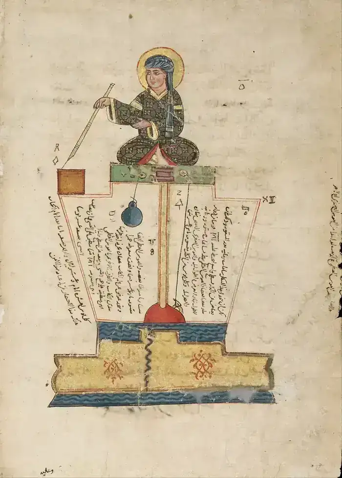
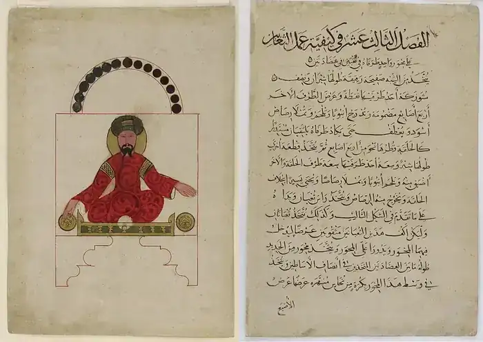

The book
Ismail al-Jazari completed The Book of Knowledge of Ingenious Mechanical Devices in 1206. It describes about fifty machines — water clocks, automata, pumps and a hand-washing device — with drawings and instructions detailed enough for modern reconstructions.
Maps, diagrams and images




The significance
The book is the fullest surviving record of medieval Islamic engineering, and several of its mechanisms are the earliest known descriptions of their kind. Working replicas have been built from the drawings, which is the test of the documentation.
The archive files it as documented because the manuscript survives and the designs have been reconstructed.
Documented: the manuscript and its date.
Documented: the machines and their drawings.
Documented: modern reconstructions.
Documented: the engineering principles.
The label: documented.
Why it is in the archive
Because it is a case where the instructions survive and the machines can be built, which settles the question.
Open resources on this topic
- PapersOpen-access articles: DOAJ · PubMed Central · Internet Archive Scholar
- BooksPublic-domain and borrowable copies: Open Library · Project Gutenberg · Google Books · Internet Archive
Cite this page
Momin, S. (2026). Al-Jazari's Automata. The Larger World Archive. https://drsamonline.github.io/LARGE_GLOBE/al-jazari-automata.htmlMomin, Sohil. “Al-Jazari's Automata.” The Larger World Archive, 2026, https://drsamonline.github.io/LARGE_GLOBE/al-jazari-automata.html.Momin, Sohil. “Al-Jazari's Automata.” The Larger World Archive, 2026. https://drsamonline.github.io/LARGE_GLOBE/al-jazari-automata.html.@misc{aljazaris2026al,
author = {Momin, Sohil},
title = {Al-Jazari's Automata},
year = {2026},
howpublished = {The Larger World Archive},
url = {https://drsamonline.github.io/LARGE_GLOBE/al-jazari-automata.html},
note = {Last reviewed 20 November 2026}
}Last reviewed 20 November 2026 · Corrections policy · this page is not peer reviewed
Sources for this page
- Wikipedia, “Al-Jazari” — the engineeren.wikipedia.org
- Wikipedia, “Automaton” — the categoryen.wikipedia.org
- Wikipedia, “Water clock” — a described deviceen.wikipedia.org
- Wikipedia, “History of engineering” — the fielden.wikipedia.org